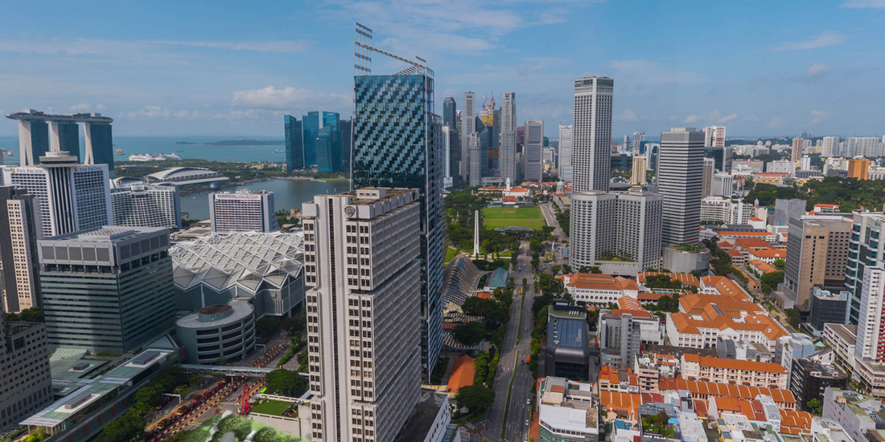
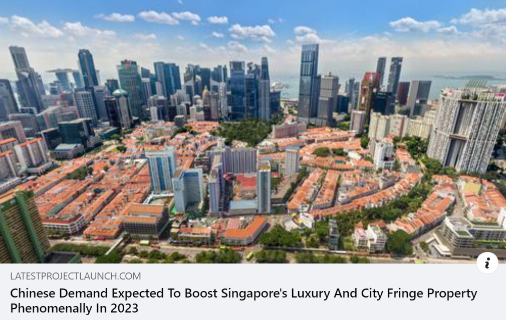

Why Wealthy Foreigners Buy Singapore Properties
Singapore is a highly attractive destination for foreign investment and property ownership, offering political stability, low taxes, world-class infrastructure, and a strategic location at the heart of Southeast Asia.
How Singapore Maintains Its Competitiveness
Singapore has been able to maintain its competitiveness over the years through various strategies and policies that have helped to foster a conducive environment for businesses and investments. Here are some key factors that contribute to Singapore's competitiveness:
1. Pro-business environment: Singapore has a strong and stable government that is committed to promoting a pro-business environment. The country has low tax rates, efficient regulatory processes, and a reliable legal system that helps to attract and retain businesses.
2. Skilled workforce: Singapore has a highly educated and skilled workforce, with a strong emphasis on technical and vocational education. The government invests heavily in education and training programs to ensure that the workforce has the necessary skills to meet the demands of a rapidly changing economy.
3. Innovation and technology: Singapore places a strong emphasis on innovation and technology, and has invested heavily in research and development to drive economic growth. The country is home to many high-tech industries and startups, and has a strong focus on developing new technologies and applications.

4. Infrastructure: Singapore has a world-class infrastructure that includes modern transportation systems, high-speed internet connectivity, and state-of-the-art communication networks. The country has also invested in green initiatives to create a sustainable and livable environment.
5. International partnerships: Singapore has built strong partnerships with other countries and international organizations to foster trade and investment. The country has free trade agreements with many countries and is a member of numerous international organizations such as ASEAN and the WTO.
In summary, Singapore's competitiveness is maintained through a combination of pro-business policies, a skilled workforce, a focus on innovation and technology, modern infrastructure, and strong international partnerships. These factors have helped Singapore to attract and retain businesses, drive economic growth, and maintain its position as a leading global hub for commerce and innovation.
Why Foreign Investors Choose Singapore
Singapore is a highly attractive destination for foreign investment due to several reasons:
1. Strategic location: Singapore is strategically located in the heart of Southeast Asia, which makes it an ideal location for companies seeking to expand their presence in the Asia-Pacific region.

2. Stable political environment: Singapore has a stable political environment and a favorable regulatory framework that encourages foreign investment.
3. Robust economy: Singapore has a highly developed economy with a strong focus on innovation and technology, making it an attractive destination for companies in industries such as finance, technology, and logistics.
4. Skilled workforce: Singapore has a highly educated and skilled workforce, which is critical for companies seeking to establish and expand their operations.
5. Business-friendly policies: The Singapore government has implemented several business-friendly policies, such as tax incentives and streamlined procedures for setting up a business, which make it easier for foreign companies to do business in the country.
6. Infrastructure: Singapore has a well-developed infrastructure, including modern transportation networks, world-class ports, and advanced telecommunications systems, which make it an attractive location for companies seeking to establish a regional hub.
Overall, these factors make Singapore a highly attractive destination for foreign investment and a key player in the global economy.

How Singapore Stays Ahead of the Curve
Singapore stays ahead of the curve in many ways by continually adapting and innovating to meet the demands of a rapidly changing world. Here are some key factors that contribute to Singapore's ability to stay ahead of the curve:
1. Future-focused policies: Singapore's government is committed to developing policies that are forward-looking and anticipate future trends. This includes investments in research and development, education and training programs, and infrastructure projects that support new and emerging industries.
2. Innovation and entrepreneurship: Singapore has a strong focus on innovation and entrepreneurship, with a thriving startup ecosystem and numerous initiatives to support new and emerging businesses. The country has also created a number of innovation hubs, such as the Jurong Innovation District, to foster collaboration between different industries and drive new ideas.
3. Digital transformation: Singapore has been quick to adopt new technologies and digital platforms, with a focus on using these tools to enhance productivity and create new opportunities. The country has developed a robust digital infrastructure, including high-speed internet connectivity and a secure data ecosystem, to support these efforts.
4. International partnerships: Singapore has built strong partnerships with other countries and international organizations, including through free trade agreements and other initiatives. These partnerships help to foster innovation and growth by providing access to new markets, technologies, and ideas.
5. Strategic location: Singapore's strategic location in the heart of Southeast Asia has helped it to become a hub for trade and commerce. The country has developed a world-class transportation network and logistics infrastructure, which helps to facilitate the flow of goods and services across the region.
In summary, Singapore stays ahead of the curve by embracing new ideas and technologies, developing future-focused policies, nurturing innovation and entrepreneurship, building strategic partnerships, and leveraging its strategic location. These factors have helped Singapore to remain at the forefront of economic growth and innovation, and position itself as a leader in the global economy.